Here you can learn all about brainrot and obviously become one with the brainrot.
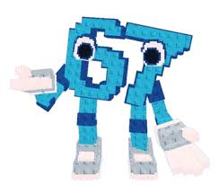
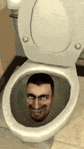
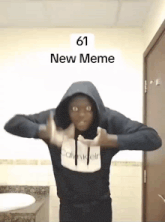
| Part 1 | Part 2 |
|---|---|
| Come up with some really dumb, cringy, and obviously annoying thing! Make some sort of gesture or character to go along with it. | Spread it through a TikTok, YouTube Short, or by telling it to every single person you see. Remember that it is your rot and make sure everyone knows that. |
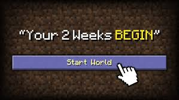
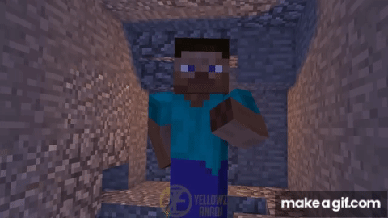
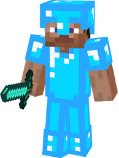
| 1 | 2 | 3 | 4 | 5 |
|---|---|---|---|---|
| Spam your friends to get them to play something. 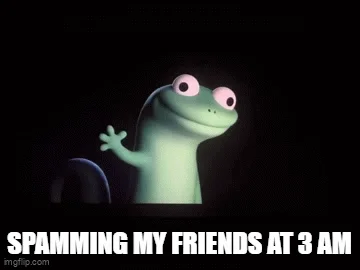 |
Doom scroll on YouTube shorts 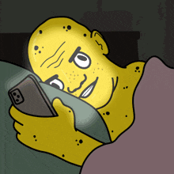 |
Play video games alone or with friends. 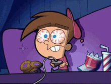 |
Think about shower thoughts without being in the shower... 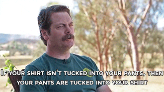 |
Look at optical illusions to torture your mind for being dumb. 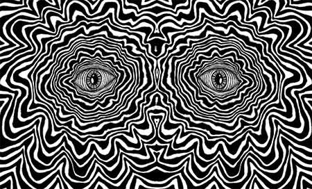 |